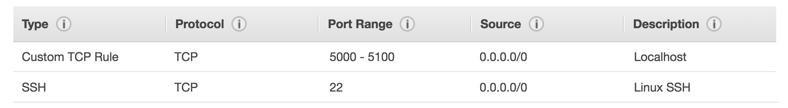

How to Run your Web Application on the AWS cloud
This is how I was able to launch my HBC Tech Scheduler on an AWS Ubuntu Instance in order to use Amazon's free server-side resources.
Creating your Instance
First, make you sure you have an AWS account, logged in as the root user with free trial privileges.
- Select Amazon Machine Image type. My computer runs on Ubuntu, so I chose the 64-bit Ubuntu Server 16.04 LTS (HVM), SSD Volume Type.
- Choose the t2.micro free-tier eligible instance.
- Allow default instance details, storage volume, and tags.
- Configure security group: Add a custom TCP rule which specifies a port range that includes the port number your app uses on your localhost. Also make sure to have an SSH rule to allow inbound traffic on TCP port 22.

- Review and launch.
- Select or create new SSH key pair.
Connecting to your Instance
- Go into the directory containing the SSH .pem file.
- Make sure the permission of the file is correct
- Use the SSH command to connect to your instance. Open up the Connect window, where you can copy and paste Amazon's automatically generated SSH command.
Launching the App
Once your inside your instance,
- Git clone your repository
- Install all your packages.
- Run the program. In order to leave the programming running even after disconnecting from the instance, type:
nohup python main.py &. Also, make sure to always keep the instance running.
Now, your web app will be running at the public IP address and specified port number!